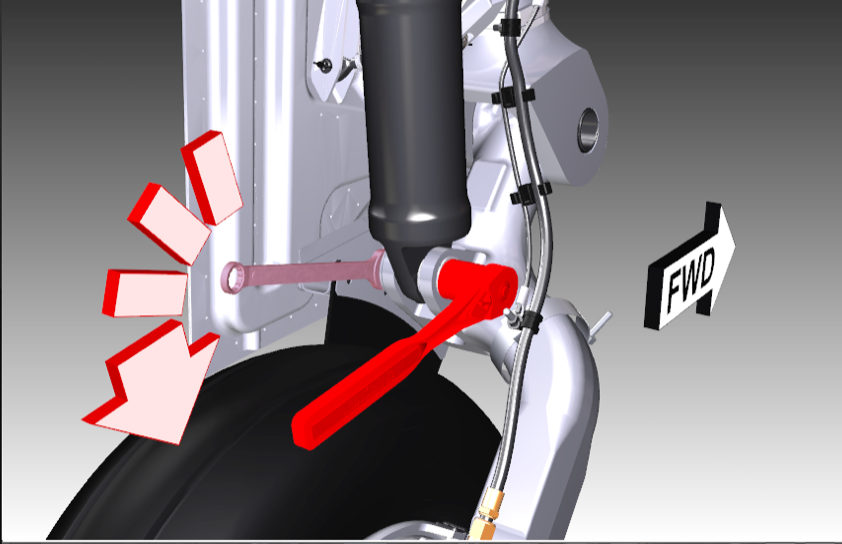
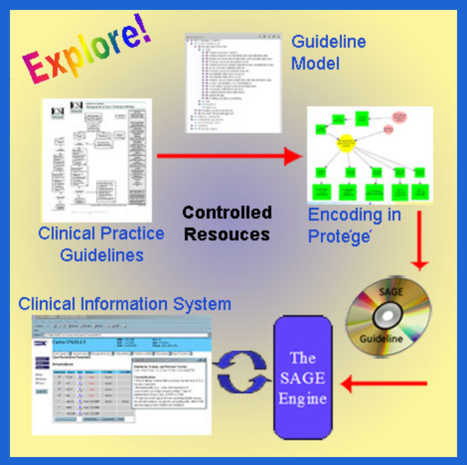

Robert M. Abarbanel, MD, PhD
robertabarbanel@gmail.com
Core competencies include:
- Proven research and analytical skills: scientific, technical, operational, and customer; that deliver results for the business. Several using dynamic databases in support of decision making.
- Product producer: commercial products taken from first idea to market combining talents for design, development, and team management.
- Keen intellectual and organizational skills: adept at quickly researching and mastering new subjects to develop a strategy, plan, and timeline to meet organizational objectives; and executing the programs on time.
- Proven practitioner of business intelligence: designer and developer of several friendly, powerful systems to bring value to individuals and organizations for using their data for complex decision making in natural ways.
- Dynamic leadership and interpersonal skills: proficient at building high performing teams and positively influencing others across the corporation, regardless of function or location, to obtain a commitment to and achieve organizational objectives under tight timelines. A good teacher, a good colleague, a good listener; experienced at communicating to all levels of an organization.
- Also – a Physician and Medical Informaticist with computing, biotechnology and medical information system experience.
Experience

2009-2015

2007-2009

2002-2007

2001-2002

1990-2001

1988-1990

1977-2023
- Practice of Pediatrics, San Francisco, CA, 8 years, Emergency Room and Locum Tenums
- IntelliGenetics/IntelliCorp, 7 years, Research Director, AI/Databases
- Tutoring, 8 years, Math and Computer Science
Education
1971
CalTech
BS, Physics/Biology
1977
University of Michigan, School of Medicine
MD, Pediatrics
1985
UC San Francisco
PhD, Medical Informatics
Project Links
| SAP Visual Enterprise |  |
| FlyThru at Boeing | |
| GE Healthcare: The Sage Project |  |